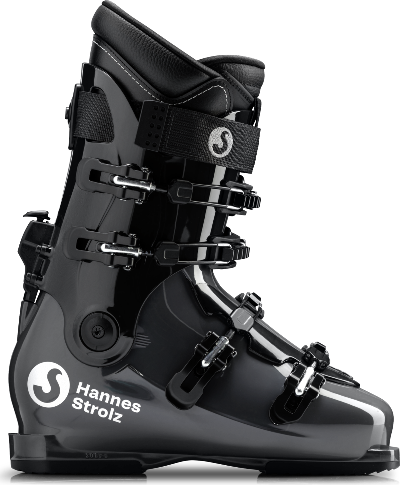
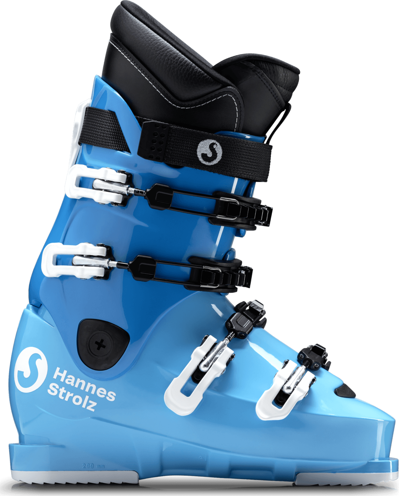
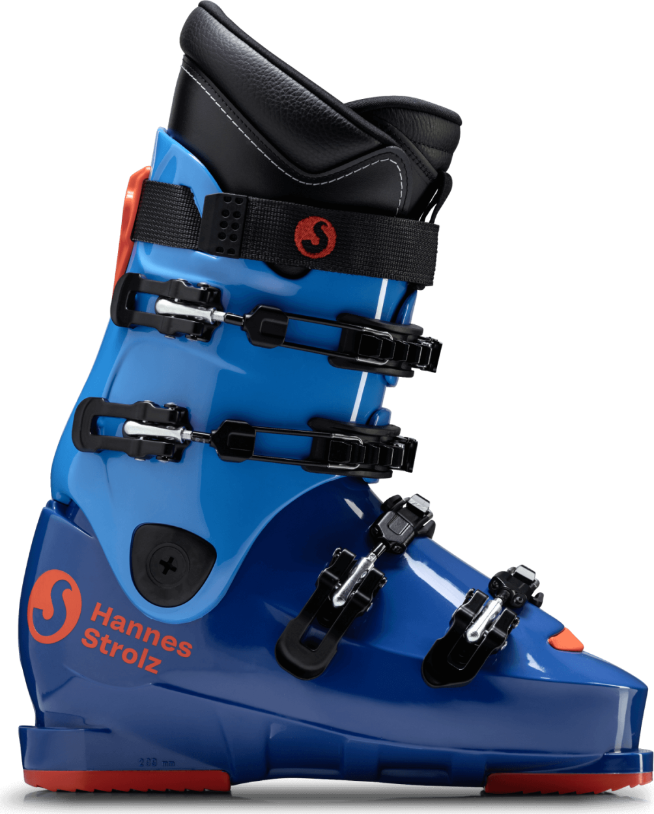
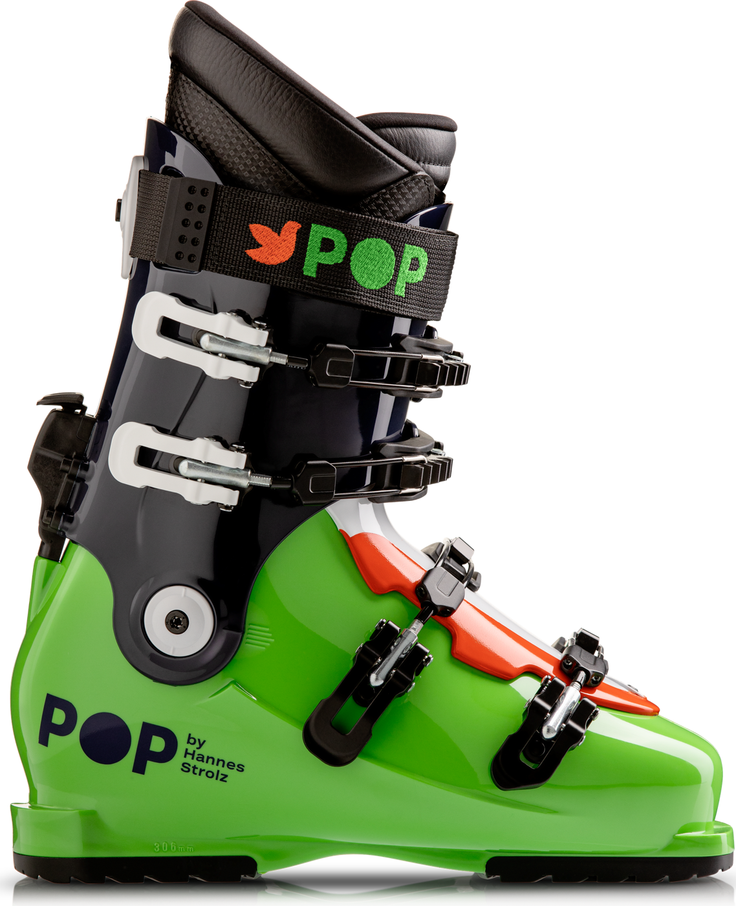
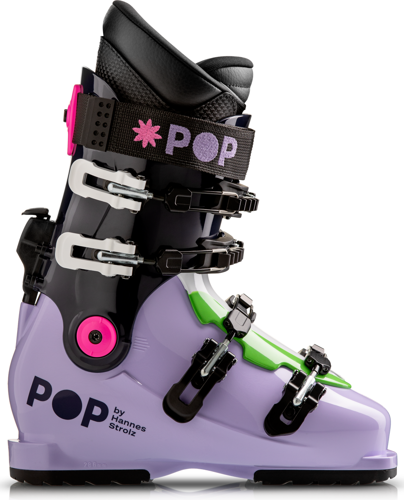

Evolution S – Black Pearl
De meest verkochte Strolz all round skischoen. Voor de intermediate tot gevorderde skiër.
De skischoen van Strolz bestaat 100 jaar en dat wordt gevierd met een nieuwe naam: Hannes Strolz. Naar de oprichter van het iconische skischoen merk.
Een set op maat gemaakte Hannes Strolz skischoenen kost € 1195,- all in, ongeacht het model. Deze prijs is inclusief de sportzolen.
De meest verkochte Strolz all round skischoen. Voor de intermediate tot gevorderde skiër.

Een allround skischoen voor de gevorderde skier die ook comfort zoekt. Het cabrio model maakt instappen makkelijk. Met loopstand.

Een skischoen voor de sportieve gevorderde skier. Het cabrio model maakt instappen makkelijk. Met loopstand.

Dezelfde skischoen als de Evolution C echter in een opvallende kleur. Een allround skischoen voor de gevorderde skier die ook comfort zoekt. Het cabrio model maakt instappen makkelijk. Met loopstand.

Een allround skischoen voor de skier met een breder kuit die comfort zoekt. Het speciale manchet maakt instappen nog makkelijker. Met loopstand.

Sportieve raceschoen voor de gevorderde skiër op alle soorten pistes.

Sportieve raceschoen voor de gevorderde skiër op alle soorten pistes.

Kleurige skischoen geschikt voor piste en off-piste.
Maten: 26,5 – 31,5
Kleurige skischoen geschikt voor piste en off-piste.
Maten: 23,5 – 26,5U kunt online een afspraak maken. U kunt echter ook telefonisch een afspraak maken via: 020-3033866.